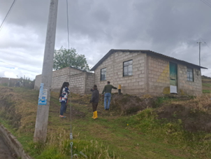
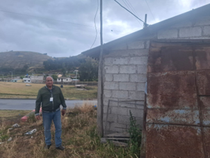
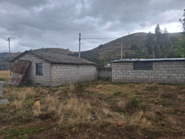
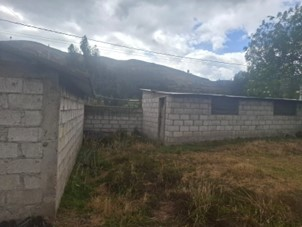

← volver al mapa
Casa - EC-RJ-154041
EC-RJ-154041 · casa · RIOBAMBA, Chimborazo
★ Oferta destacada




Datos del remate
| Avalúo pericial | $7,267 |
| Tipo de bien | casa |
| Área de construcción | 72.00 m² |
| Área de terreno | 341.31 m² |
| Cantón / Provincia | RIOBAMBA, Chimborazo |
| Dirección / Sector | calpi - rumi cruz. un bien inmueble signado con el #1, se encuentra ubicado en la carretera garcía moreno, sector rumi cruz, parroquia calpi, del cantón riobamba, provincia de chimborazo, con ficha registral – del bien inmueble 7845, del registro de la propiedad el cantón riobamba. |
| Señalamiento | Segundo Señalamiento |
| Fecha de remate | 2026-08-28 |
| No. de proceso | 06335202102858 |
Análisis vs. mercado
| Avalúo por m² | $101/m² |
| Mediana de mercado en la zona | $603/m² |
| Descuento vs. mercado | 83.3% |
| Comparables usados | 8 |
| Radio de búsqueda | 2000 m |
| Puntaje | 92/100 |
Descripción completa del avalúo
bien inmueble de configuración irregular, no cuenta con delimitación definida y no cuenta con cerramiento en el interior de este existe una edificación de una planta de mampostería de bloque y cubierta de asbesto cemento (tipo miduvi) sin acabados y su ocupación es para vivienda y otra infraestructura de mampostería de bloque y cubierta de zinc, para el cuidado de animales.
bien inmueble de configuración irregular, no cuenta con delimitación definida y no cuenta con cerramiento en el interior de este existe una edificación de una planta de mampostería de bloque y cubierta de asbesto cemento (tipo miduvi) sin acabados y su ocupación es para vivienda y otra infraestructura de mampostería de bloque y cubierta de zinc, para el cuidado de animales.
un bien inmueble signado con el #1, se encuentra ubicado en la carretera garcía moreno, sector rumi cruz, parroquia calpi, del cantón riobamba, provincia de chimborazo, con ficha registral – del bien inmueble 7845, del registro de la propiedad el cantón riobamba.
Análisis de inversión (IA)
⚠ Dudosa — revisar bienEl descuento del 83.3% frente al mercado parece atractivo en papel, pero el avalúo pericial de apenas $7,266.52 para 72m² de construcción refleja una propiedad en estado muy básico y con múltiples limitaciones físicas. La combinación de construcción sin acabados, cubierta de asbesto cemento, uso mixto (vivienda y animales) y terreno sin cerramiento ni delimitación definida sugiere que el valor real recuperable es bajo y los costos de regularización o mejora pueden consumir rápidamente cualquier ventaja de precio.
A favor:
- Terreno amplio de 341.31 m² en relación al área construida de 72 m², lo que da margen de desarrollo futuro
- Descuento nominal muy elevado (83.3%) respecto a la mediana de mercado, lo que podría implicar precio de entrada bajo
- Cuenta con ficha registral en el Registro de la Propiedad del cantón Riobamba, lo que indica existencia de título formal
En contra:
- Avalúo pericial extremadamente bajo ($7,266.52), señal de que el bien tiene valor comercial real muy limitado
- Construcción sin acabados, lo que implica inversión adicional significativa para hacerla habitable o comercializable
- Cubierta de asbesto cemento representa un pasivo ambiental y de salud; su remoción y reemplazo tiene costo relevante
- Terreno de configuración irregular sin cerramiento ni delimitación definida, lo que dificulta establecer linderos exactos y puede generar conflictos de colindancia
- Ubicación en sector rural (Rumi Cruz, parroquia Calpi), lo que reduce la demanda y la liquidez del bien
- Los 8 comparables de mercado usados pueden no corresponder a propiedades rurales similares en Calpi, lo que pone en duda la representatividad del descuento calculado
- Presencia de infraestructura para cuidado de animales sugiere uso agropecuario que puede implicar zonificación rural con restricciones
Riesgos a verificar:
- Sin cerramiento ni delimitación definida: alto riesgo de litigios de linderos o invasión de terreno
- Asbesto cemento en cubierta: riesgo sanitario y obligación de manejo especial de residuos peligrosos al demoler o reemplazar
- Sector Rumi Cruz, parroquia Calpi: zona rural periférica con posible falta de servicios básicos completos (agua potable, alcantarillado, electricidad estable); no se confirma en la descripción
- No se menciona si existe ocupante actual; en remates judiciales la presencia de ocupantes puede complicar la toma de posesión
- Configuración irregular del terreno puede dificultar subdivisión, regularización municipal o venta futura
- El descuento del 83.3% calculado frente a mediana de mercado de Riobamba urbano podría estar inflado si los comparables no son de zona rural equivalente, distorsionando la percepción de oportunidad
Generado por IA a partir de la descripción — no es asesoría legal ni financiera.
Esta ficha es una copia de lo publicado en el sitio oficial de remates
judiciales de la Función Judicial del Ecuador, para consulta — no
reemplaza el expediente judicial. remates.funcionjudicial.gob.ec no da
un link propio por remate, por eso se generó esta página aparte.
Antes de ofertar, el expediente debe revisarlo un abogado.